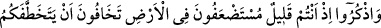
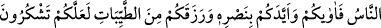
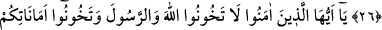
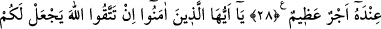
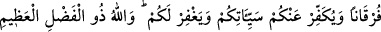
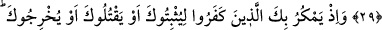
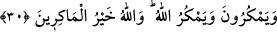

HİYÂNET ETMEMEK
26. Yeryüzünde az sayıda olduğunuz ve zayıf sayıldığınız için insanların sizi alıp
götürmesinden korktuğunuz zamanları hatırlayın. Şükredersiniz diye Allah size yer
yurt verdi; sizi yardımıyla destekledi ve size temizinden rızıklar verdi.
27. Ey îman edenler! Allah’a ve Peygamber’e hâinlik etmeyin; (sonra) bile bile
kendi emanetlerinize hainlik etmiş olursunuz.
28. Bilin ki, mallarınız ve çocuklarınız birer imtihandır ve büyük mükâfat Allah’ın
katındadır.
29. Ey îman edenler! Eğer Allah’tan korkarsanız O, size iyi ile kötüyü
ayırdedecek bir anlayış verir, günahlarınızı örter ve sizi bağışlar. Çünkü Allah
büyük lütuf sahibidir.
30. Hani kâfirler seni tutup bağlamak, öldürmek veya yurdundan çıkarmak için
tuzak kuruyorlardı. Onlar (sana) tuzak kurarlarken Allah da (onlara) tuzak
kuruyordu. Çünkü Allah tuzak kuranların en iyisidir.
Ey muhâcirler! “Yeryüzünde” Mekke’de “az sayıda olduğunuz ve zayıf sayıldığınız”
Kureyş’in elinde baskı altında olduğunuz “için insanların sizi alıp götürmesinden”
Kureyş kâfirlerinin sizi kıskıvrak yakalayıp Mekke’den çıkarmalarından ve
götürmelerinden
“korktuğunuz
zamanları
hatırlayın.”
Verdiği
nimetlere
“şükredersiniz diye Allah size yer yurt verdi;” varıp konaklayabileceğiniz bir yer
hazırladı -ki o hicret yurdu olan Medîne’dir-; kâfirlere karşı “sizi yardımıyla
destekledi ve size” önceki ümmetlere helal olmayan ganimet gibi “temizinden rızıklar
verdi.”
Cüneyd (k.s.) der ki: “Yedi yaşında bir çocukken bir gün Seriy Sakatî’nin
yanındaydım. Yanında bir topluluk şükür hakkında konuşuyorlardı. Seriy bana: